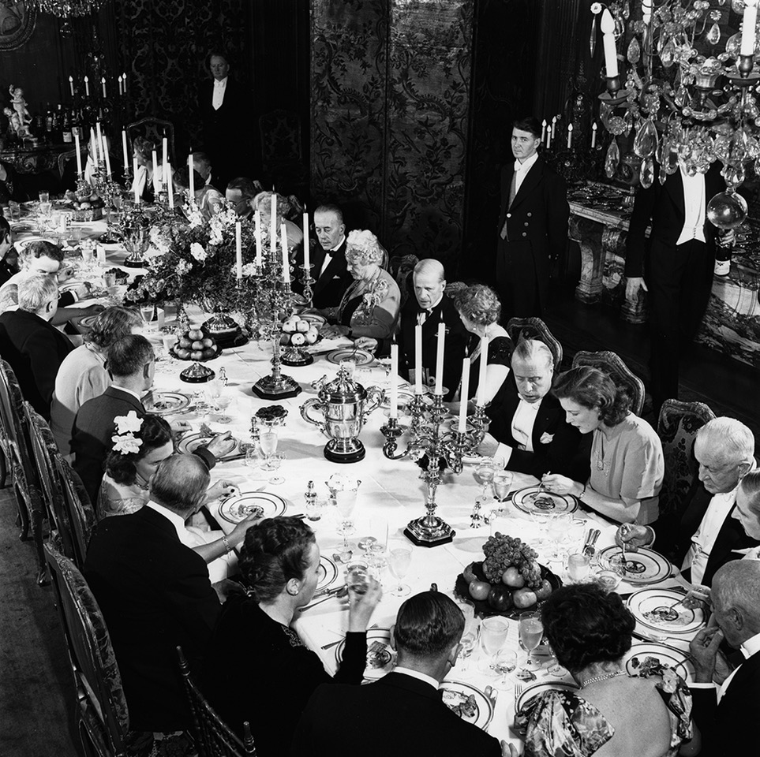
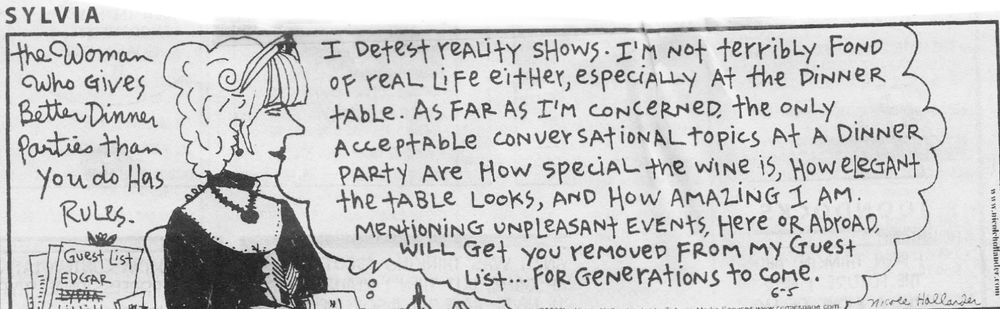
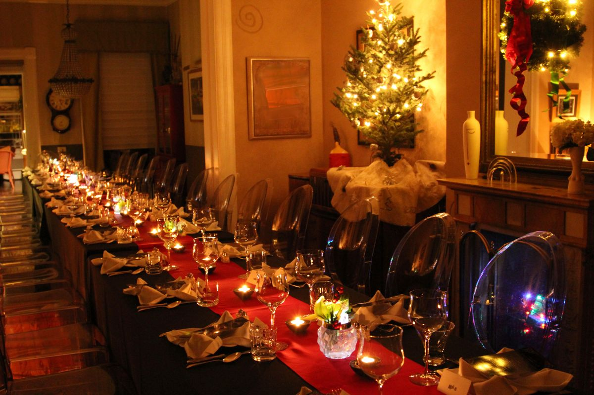
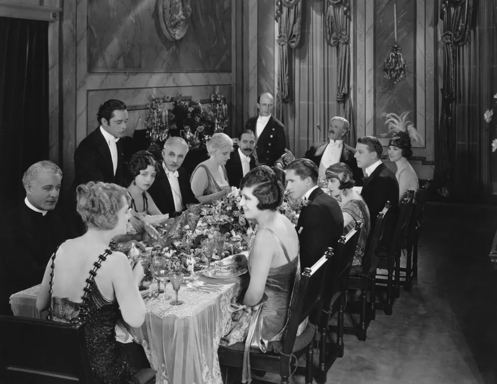
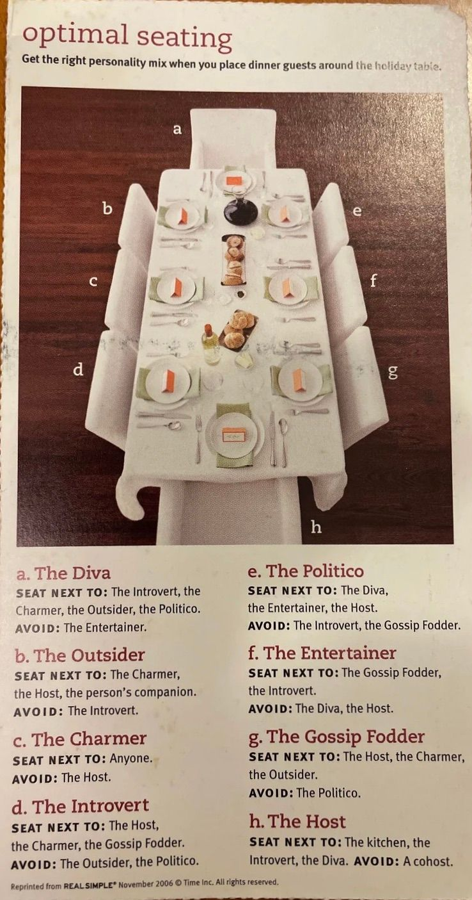

Thoughtful seating arrangements can make or break a dinner party — and the etiquette governing them has a surprisingly rich and amusing history.
By Jill Lowe
Facts & Froth

The formal dinner party — a carefully choreographed social occasion
We’ve all been at various disastrous dinner parties when guests stray from the guidelines of avoiding the topics of religion, politics, sex, and finances. We can remember misogynistic or off-color jokes, or those who decide at your dinner party to tell some truths!
It is hard to know how people will behave, but it is made easier with thoughtful seating plans. The known narcissist and the know-it-all might not be best together, but the guest likely to have endless stories of ailments might be well placed next to a guest wishing to limit those organ recitals! The itemizing of recent travel can also prove tedious.
Of note: the discussion here is not whether to have seating plans, but considerations in establishing the plan, because a “pull your name out of a hat” or “plonk yourselves anywhere” usually plays out less well.

A reminder that thoughtful hosts have always had rules. Cartoon: Nicole Hollander
The London Embassy Custom
If arriving at a fancy dinner party in London or any city with embassies or consulates, it is often observed that staff greeting one may indicate by means of perhaps a small hand-held chalkboard the actual seating plan of the dinner. What this does is prevent one pouring one’s best witticisms or bon mots to someone over aperitifs, only to find one is seated beside that same individual at dinner. This chalkboard idea is so very sensible and considerate of guests.
“A seating plan prevents one from squandering one’s best witticisms over aperitifs on the very person one will be seated beside at dinner.”
Particulars of Seating Plans
Armed with the available historic guidelines for seating — host and hostess at the ends of the table, the most important guest on the hostess’s right, and so forth — and the desire to alternate genders, one realizes that some guidelines have to be abandoned. For example, only for rectangular tables of 6 or 10 can one achieve alternating genders with host and hostess at head and foot. Tables of 8 or 12 must abandon at least one guideline. And so adapting the conventions to the situation and the particular guest constellation is the usual result.
Indeed, there is good reason to abandon all the traditional guidelines entirely and focus more on the suitability of actual people being seated together.
In today’s world, with guests of all ages, marital statuses, partnerships, and walks of life, the seating arrangements invariably mean some men being seated together and some women seated together.
It is quite good to form the plan imagining guests conversing with one another on either side as well as across the table.
At royal banquets, it is a common practice to converse with the person seated on one’s right for the first course, after which the person on one’s left is drawn in for the main course. (For royal banquets though, conversation is confined to the two people beside and not across the table.)

The formal banquet table — where seating protocol has centuries of tradition behind it

The art of the formal dinner — a tradition with its own elaborate choreography
Seat Partners Together?
This question evokes strong responses for and against. Whilst not a scientific study, it seems that in Europe, Britain, Australia, and Canada, overwhelmingly couples are separated. Since it is assumed that couples do talk when not at the dinner party, seating couples together cuts down 50% of the available people with whom to talk — unless, of course, the couple is there to compile the grocery list.
With plenty of exceptions, the notion that in the USA couples prefer to be seated together is nonetheless borne out in practice.
More common in many cultures is the sometimes exclusion in dinner parties of the single woman, to an extent not seen for single men. Oh dear!
Table Wisdom
Any shaped table benefits from a seating plan. Especially important:
The horseshoe, with seating in the inner section, demands a plan
Even a simple backyard supper benefits from advance thought
Of all tables, the elongated banquet table requires a seating plan
Guests feel valued if expected and planned for
Place Cards
Place cards can be hand written or written on erasable items. Tented cards can be printed on computer. It is helpful if large type is used, and it is very thoughtful to print front and back so that guests can read place cards from opposite.
For the success of the dinner party to be spirited and not merely convivial, it seems prudent to evaluate the guests for listening ability, boldness, and the interviewer type — as well as the “Oh my goodness, I’ve been talking about me all the time, now why don’t you talk about me?” type.

Sound advice, as ever, from Helen
Best of course to be the guest who can be placed anywhere — by being interested and interesting.
More from Jill Lowe’s Collection
Another Sylvia gem: the acceptable topics at dinner. Cartoon: Nicole Hollander
An intimate 1920s dinner — the host pours, the guests observe
A formal estate dinner, circa 1950s — protocol strictly observed at every place
The long table comes into its own at the holidays — seating plan essential
A beautifully set home dining table — from Jill Lowe’s own entertaining
The round table encourages conversation — and removes the question of “head of table”
Al fresco dining — where even a garden table deserves a seating plan
Optimal Seating: a guide by personality type. Reprinted from Real Simple, November 2006
The standard arrangement: hosts at the ends, Guests of Honor to their right
The U-shaped arrangement — popular for large gatherings and official functions
More wisdom from Helen: a shallow-deep-moody-shallow-deep pattern works best
About the Author
Under the banner of “Facts and Froth,” Jill Lowe writes about the quirky and curious aspects of the ordinary and familiar parts of our everyday life. Photo by Joe Mazza, Bravelux Inc. More →